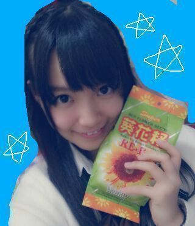
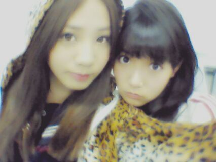
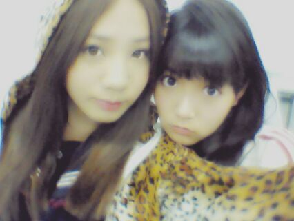
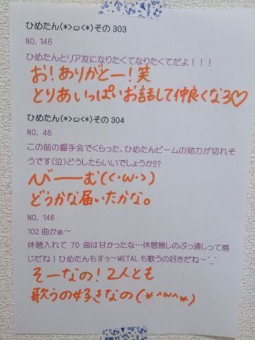

| 2013/09 11 Wed | ひめたん(*>ω<*)そ の340 |

はい、ひまわりの種
......
え？なんでひまわりの種なのって？
聞いてくれてありがとう！
あのねなんでかってゆーとねー！
インドネシアのお土産にって
妹がひめたんのために
買ってきてくれたんだよぉお( ^ω^ )
どうかな納得できたかな
あーそっかそーゆーことねーって
なったかなみなさん( ^ω^ )( ^ω^ )( ^ω^ )ね
ちなみに妹は本気です
皮の向き方まで教えてくれたんだから
これはもう食べないわけにはいきません
味？気になるよね！まだ食べてないんだー！
ほら、なんてゆーか、その
勇気がでないんだ...誰かあたしのかわりに......
＼ ウチが広島のカシラじゃごるあ ／

前回の乃木どこは番長対決でした！
万理華こそ可愛かったよ
ギャルっかまりっかまりっかぎゃるか
広島代表のひめたんとまあやは
怖かったですか？ああん( ω )？今なんて
冗談ですごめんなさいごめんなさい
オンエアみてるとひめたんは
やーたーらポッケに手つっこんでましたが
悪ぶってるつもりなんで
様になってないなーとか思っても
そこは触れないで下さい(∪^ω^∪)
ホンモノ感を出してみたの！
ほらーちょっと悪そうに見
おおっと電車乗り過ごしたーあああああああ
(↑ここまで昨日の夕方☆)
最近あったちょっと悲しかったこと？
そうだなークリアファイルの底が
避けたことかな( *^ω^* )♪
はい、ひまわりの種
......
え？なんでひまわりの種なのって？
聞いてくれてありがとう！
あのねなんでかってゆーとねー！
インドネシアのお土産にって
妹がひめたんのために
買ってきてくれたんだよぉお( ^ω^ )
どうかな納得できたかな
あーそっかそーゆーことねーって
なったかなみなさん( ^ω^ )( ^ω^ )( ^ω^ )ね
ちなみに妹は本気です
皮の向き方まで教えてくれたんだから
これはもう食べないわけにはいきません
味？気になるよね！まだ食べてないんだー！
ほら、なんてゆーか、その
勇気がでないんだ...誰かあたしのかわりに......
＼ ウチが広島のカシラじゃごるあ ／

前回の乃木どこは番長対決でした！
万理華こそ可愛かったよ
ギャルっかまりっかまりっかぎゃるか
広島代表のひめたんとまあやは
怖かったですか？ああん( ω )？今なんて
冗談ですごめんなさいごめんなさい
オンエアみてるとひめたんは
やーたーらポッケに手つっこんでましたが
悪ぶってるつもりなんで
様になってないなーとか思っても
そこは触れないで下さい(∪^ω^∪)
ホンモノ感を出してみたの！
ほらーちょっと悪そうに見
おおっと電車乗り過ごしたーあああああああ
(↑ここまで昨日の夕方☆)
最近あったちょっと悲しかったこと？
そうだなークリアファイルの底が
避けたことかな( *^ω^* )♪

 ひめたんの瞳に
ひめたんの瞳に
完全にハートを射抜かれた僕をどう思う？
ようこそひめきゅんさんん
そーゆーの嬉しいよー///きゅん
個別握手会で乃木坂の詩リクエストしたら
振り付け教えてくれますか？
もちろんいいよーっ
一緒に乃木詩うたお( ^O^ )☆
サイリウム２本持ってきてねー♪
 野球部ってどんなイメージ？
野球部ってどんなイメージ？
スポーツしてる人かっくいーよね！
ひめたんは中学生の頃
放送室から野球部が練習してるがみえるから
練習に疲れたら試合観戦してたよー
ルールとかあんま知らんのだけどね←
ひめたんの元気の源は何ですか？
そーですねー
みなさーんとコメントとかでお話すると
とっても元気になるし
学校のおともだちと話しても元気になるし
家族のみんなで話しても元気になるし
誰かにかまってもらうことかな(*^ω^*)
お好みはコテだけで食べれますか？
食べれるよ！猫舌だけど！
あのねー食べれるけどちょっとさめるの待ちたい
鉄板から直に食べるのは
地元ならではかもしれんけどちょっと苦手です←
食べれるけどね！
ひめたんは虫とか苦手？
苦手ー(´・ω・｀)
寝てるままの足に虫が止まってたら
叩いたりできないので写め撮る人です(´・ω・｀)
あ、でも相手が蚊なら果敢に戦えるけどねっ
ひめたんってなん時間くらいねてるの？
日によってまちまちだけど
５〜６時間とか寝てるかなー
質問ってノートに全部書き出したりしてから
答えてるの？
そーゆー子もいるよね！
ひめたんは質問してくれた方の文体とか
そのまま再現したい派なので
コピーしてまーす◎いつもありがとー＼(^^)／
最近年とったなー...って思うことあるー？
肩こりがそろそろ辛い(´;ω;｀)
そーいや最近マッサージ行けてないなー
メンバーさんと肩もみあいこするけど
誰かー助けてー！
 今年の学校祭で、乃木坂踊るんだけど
今年の学校祭で、乃木坂踊るんだけど
なに踊ればいいと思うー？
みんな知ってて盛り上がるのは
「おいでシャンプー」かなー
やってて楽しいしね♪
「ぐるぐるカーテン」もとっても楽しいけど
サビ踊るときは、その、気をつけてねっ//////
あ、アメブロにも遊びに来てくれたみなさん
本当にありがとうございました◎
コメントもしっかり読むからねー！
次の当番の時もしっかり読んでねー
いいね！ってやつ楽しいね！
あっ昨日は収録でしたー
今日はレッスンですー
ぱっつんらりんかわゆす///

(＊´・ω・＊)
コメント(298)
2013/09/11 10:12